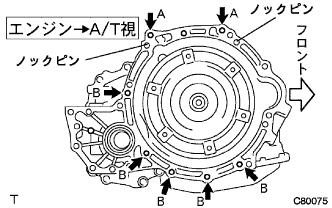
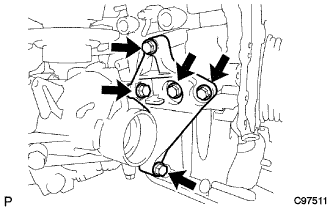
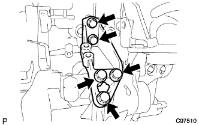
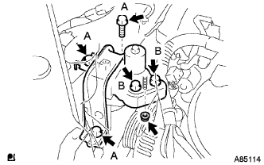
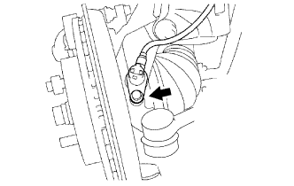

パーシャル エンジンASSY（1NZ-FE(4WD)） 取り付け |
| 1. エキゾースト マニホルド取り付け |
 |
新品のエキゾーストマニホルドツウヘッドガスケットを介して、エキゾーストマニホルドを図の順序で締め付ける。
| 2. エキゾーストマニホルドヒート インシュレータ NO.1取り付け |
ボルト4本で、エキゾーストマニホルドヒートインシュレータNO.1を取り付ける。
| 3. クウネンヒ センサ取り付け |
 |
SSTを使用して、クウネンヒ センサをエキゾーストマニホールドに取り付ける。
参照)クランプおよびコネクターを接続する。
| 4. E.F.I. ウォータテンパラチャ センサ取り付け |
新品のガスケットを介して、ディープソケットレンチ19mmを使用して、E.F.I. ウォータテンパラチャ センサを取り付ける。
| 5. ノックコントロール センサ取り付け |
 |
ナットで、ノックコントロールセンサを取り付ける。
ノックコントロールセンサのコネクターを接続する。
| 6. エンジン オイルプレッシャ スイッチASSY取り付け |
 |
ねじ部にアドヘシブ1324塗布する。
| *1 | アドヘシブ1324 |
ディープソケットレンチ(24ｍｍ)を使用して、オイルプレッシャスイッチを取り付ける。
オイルプレッシャスイッチ用コネクターを接続する。
| 7. サーモスタット取り付け |
新品のガスケットをサーモスタットに取り付ける。
 |
図のようにジグル弁を上側にしてサーモスタットを取り付ける。
| 8. ウォータ インレット取り付け |
ナット２個で、ウォータインレット Ｗ／ラジエータアウトレットホースを取り付ける。
| 9. ウォータバイパス パイプ NO.1取り付け |
新品のガスケットを介し、ボルト2本およびナット2個でウォータバイパスパイプNO.1を取り付ける。
| 10. オイルレベルゲージ ガイド取り付け |
新品のOリングにエンジンオイルを塗布し、オイルレベルゲージガイドに取り付ける。
ボルトでオイルレベルゲージガイドを取り付ける。
オイルレベルゲージを取り付ける。
| 11. インテーク マニホルド取り付け |
 |
新品のガスケットをインテークマニホールドに取り付ける。
図の順序でインテークマニホルドを仮締めした後、規定トルクで締め付ける。
インテークマニホールドにワイヤハーネスを接続する。
ボルト2本で、ブレーキブースタ用バキュームチューブを取り付ける。
| 12. オルタネータASSY取り付け |
 |
固定用ボルトBでオルタネータを仮付けする。
 |
ボルトAおよびナットでファンベルトアジャスティングバーを仮付け後、オルタネータをシリンダブロック側に寄せてナットを本締めする。
コネクタおよびワイヤハーネスクランプを取り付ける。
ナットで+B端子ターミナルを取り付ける。
ターミナルキャップを取り付ける。
| 13. イグニッション コイル NO.1取り付け |
ボルト4本で、イグニッションコイル4個を取り付ける。
| 14. ドライブプレート ＆ リング ギヤSUB-ASSY取り付け |
SSTを使用して、クランクシャフトダンパを固定する。
 |
ドライブプレート & リングギヤ取り付け
ボルトおよびねじ穴を清掃する。
ボルトにアドへシブ1324を塗布する｡
図の順序でボルトを締め付ける｡
| 15. オートマチックトランスアクスルASSY取り付け |
|  |
エンジン側にノックピンが付いていることを確認する。
エンジンとトランスアクスルASSYを水平にしてノックピンとノックピン穴を合わせ、図の位置のボルト7本を締め付ける。
トルクコンバータセットボルト6本にアドヘシブ1324を塗布する。
 |
トルクコンバータセットボルト6本を締め付ける。
| 16. トランスファASSY取り付け |
トランスファASSYをトランスアクスルASSYに取り付ける。
 |
ナット6個を取り付ける。
| 17. トランスファスティフナ プレート RH取り付け |
|  |
ボルト5本で、トランスファスチフナプレートRHを取り付ける。
| 18. トランスファスティフナ プレート CTR取り付け |
|  |
ボルト5本で、トランスファスチフナプレートCTRを取り付ける。
| 19. マニホルドサポート ブラケット取り付け |
 |
ボルト3本で、マニホルドサポートブラケットを取り付ける。
| 20. エンジンマウンティング ブラケット RR取り付け |
 |
ボルト3本で、エンジンマウンティングブラケットRRを取り付ける。
| 21. スタータASSY取り付け |
ボルト2本でスタータASSYを取り付ける。
コネクタを接続する。
ナットで30端子を取り付ける。
ターミナルキヤツプを閉じる。
| 22. フライホイールハウジングサイド カバー取り付け |
 |
突起をシリンダブロツクのおくまで完全に差し込み、突起をシリンダブロックに沿わせるようにして押し当てながらつめをオイルパンにはめ込む。
| 23. エキゾーストパイプASSY FR取り付け |
ノギスを使用して、コンプレッションスプリングの自由長を測定する。
新品のガスケットを木片およびハンマーを使用して、エキゾーストマニホルドの面一まで徐々に打ち込む。
| *1 | 木片 |
| *2 | ガスケット |
| *3 | エキゾーストマニホルド |
| *4 | エキゾーストパイプASSY FR |
 | 車両前方 |
ボルト2本およびコンプレッションスプリング2個で、エキゾーストマニホルドにエキゾーストパイプASSY FRを取り付ける。
| 24. フロントサスペンション クロスメンバSUB-ASSY取り付け |
ボルトで、エンジンマウンティングインシュレータRRとエンジンマウンティングブラケットRRを取り付ける。
ボルト2本をはずし、エンジンハンガ2個を取りはずす。
ボルトで、ラジオセッティングコンデンサを取り付ける。
ボルトで、オキシジエンセンサワイヤリングブラケットを取り付ける。
| 25. パワーステアリング リンクASSY取り付け |
ボルト2本で、パワーステアリングASSY W/ベーンポンプを取り付ける。
| 26. ベーン ポンプASSY取り付け |
ボルト2本でベーンポンプASSYを仮付けする。
コネクターを接続する。
ベーンポンプVベルトを取り付ける。
Vベルトの張力を調整し、調整用ボルトBを締付ける。
固定用ボルトAを締付ける。
| 27. コネクター接続 |
 |
スピードメータセンサーコネクター、トランスミッションワイヤコネクター、ニュートラルスタートスイッチコネクターおよびレボリューションセンサコネクターを接続する。
| 28. エンジンASSY W/トランスアクスル取り付け |
高さ調整式アタッチメントおよびプレートリフトアタッチメントをセットし、エンジンリフターをセットする。
ボルト4本で、エンジンASSY W/トランスアクスルおよびフロントサスペンションクロスメンバを仮組み付けする。
ボルト2本で、エンジンマウンティングインシュレータLHを取り付ける。
|  |
ボルト5本およびナットで、エンジンマウンティングインシュレータRHを取り付ける。
SSTをサスペンションクロスメンバRH側および車両RH側の基準穴に差し込む。
| *a | 基準穴 |
ボルトA、Bの順序で仮締めする。
 | 車両前方 |
SSTをサスペンションクロスメンバRH側および車両RH側の基準穴に差し込み、規定トルクで締め付ける。
SSTをサスペンションクロスメンバLH側および車両LH側の基準穴に差し込む。
| *a | 基準穴 |
 |
ボルトA、Bの順序で仮締めする。
| 車両前方 |
SSTをサスペンションクロスメンバLH側および車両LH側の基準穴に差し込み、規定トルクで締め付ける。
ボルト4本で、フロントサスペンションメンバリインホースメントLHおよびRHを取り付ける。
| 29. フロントドライブ シャフトASSY LH取り付け |
インボードジョイントASSY LHのスプライン部にオートフルードタイプT-IVを塗布する。
 |
インボードジョイントASSY LHのスプラインをかん合させ、ブラスバーおよびハンマーを使用して、フロントドライブシャフトASSY LHを挿入する。
| 30. フロントドライブ シャフトASSY RH取り付け |
インボードジョイントASSY RHのスプライン部にオートフルードタイプT-IVを塗布する。
シャフトのスプラインを合わせ、ドライブシャフトASSY RHを確実に挿入する。
 |
角軸マイナスドライバーを使用して、ドライブシャフトベアリングブラケットホールスナップリングをベアリングブラケットに取り付け、新品のベアリングブラケットボルトNo.1を取り付ける。
| 31. フロントアクスルASSY LH取り付け |
 |
フロントアクスルASSY LHを車両外側に押して、フロントアクスルASSY LHにフロントドライブシャフトASSY LHのスプラインをかん合させ、挿入する。
 |
フロントアクスルASSYをショックアブソーバに取り付け、車両前方からボルト２本を挿入し、ナット２個を締め付ける。
| 32. フロントアクスルASSY RH取り付け |
| 33. タイロッド エンドSUB-ASSY LH取り付け |
タイロッドエンドLHをステアリングナックルに取り付け、キャッスルナットで締め付ける。
新品のクリップを取り付ける。
| 34. タイロッド エンドSUB-ASSY RH取り付け |
| 35. フロントサスペンションロワーアームNo.1 LH取り付け |
フロントサスペンションロワーアームNo.1 RHのステアリングナックルに取り付け、キャッスルナットで締め付ける。
新品のクリップを取り付ける。
| 36. フロントサスペンションロワーアームNo.1 RH取り付け |
| 37. スタビライザ バー FR取り付け |
車両右側からフロントスタビライザバーを挿入する。
 |
左右のフロントスタビライザバーブシュNo.1をスタビライザバーの識別マークの外側に取り付ける。
ボルト4本で、フロントスタビライザブラケットNo.1 LHおよびRHを介して、フロントスタビライザバーをフロントサスペンションクロスメンバに取り付ける。
| 38. スピード センサ FR LH取り付け |
|  |
ボルトで、スピードセンサFR LHをステアリングナックルに取り付ける。
 |
スピードセンサFR LHのクランプおよびフレキシブルホースをフロントショックアブソーバASSY LHに取り付ける。
| 39. スピード センサ FR RH取り付け |
| 40. フロントアクスル シャフト ナット LH取り付け |
ソケットレンチ(30mm)を使用して、新品のフロントアクスルハブナットLHを取り付ける。
 |
タガネおよびハンマーを使用して、フロントアクスルハブナットLHをかしめる。
| 41. フロントアクスル シャフト ナット RH取り付け |
| 42. オキシジェン センサ接続 |
参照)| 43. エキゾースト パイプASSY CTR取り付け |
新品のガスケットを介して、エキゾーストパイプサポート2個およびナット２個でエキゾースト パイプASSY CTRを取り付ける。
| 44. プロペラシャフトASSY取り付け |
エクステンションハウジングからSSTを取りはずす。
エクステンションハウジングにプロペラシャフトASSYを挿入する。
プロペラシャフトASSYおよびインタミディエイトシャフトASSYの合わせマークを合わせる。
ボルト4本、ワッシャおよびナット各4個で、プロペラシャフトASSYを取り付ける。
| 45. ステアリングスライディング ヨークSUB-ASSY接続 |
合わせマークを合わせて、ボルトでスライディングヨークを接続する。
ボルト2本で、スライディングヨークを固定する。
| 46. ステアリングコラムホール カバーSUB-ASSY NO.1取り付け |
 |
クリップAを付け、ホールカバーNo.1およびクリップBをボデーに取り付ける。
| 47. ステアリングコラムホールカバー プレート取り付け |
 |
クリップ2個でステアリングコラムホールカバープレートを取り付ける。
| 48. クーラコンプレッサ W/マグネットクラッチASSY取り付け |
ボルト4本で、コンプレッサASSYを取り付ける。
コネクターを接続する。
| 49. ファン ＆ オルタネータ Vベルト取り付け |
Vベルトを各プーリに仮付けする。
| 50. ファン ＆ オルタネータ Vベルト調整 |
 |
ハブナットレンチまたはバーなどを使用して、オルタネータを車両フロント側に引いて、フアン & オルタネータVベルトの張力を調整する。
 |
調整用ボルトAを締め付けてから、固定用ボルトBを締め付ける。
| 51. Vリブドベルト点検 |
 |
張力およびたわみ量点検
| 新品取り付け時 [ｍｍ] | 点検時 [ｍｍ] | |
|---|---|---|
| Vベルト | 8.0-9.0 | 12.5-13.5 |
| P/Sベルト | 8-10 | 11-13 |
| 新品取り付け時 [N{ｋｇｆ} ] | 点検時 [N{ｋｇｆ} ] | |
|---|---|---|
| Vベルト | 700-800 {71-82} | 300-400 {31-41} |
| P/Sベルト | 441-539 {45-55} | 245-343 {25-35} |
| 52. エンジンワイヤ取り付け |
エンジンワイヤをエンジンコントロールコンピュータおよびジャンクションブロックに接続する。
エンジンルームジャンクションブロックにコネクターおよびクランプをワイヤハーネスを接続する。
ボルトで、エンジンルームワイヤハーネスのアースワイヤを取り付ける。
グラブボックスを取り付ける。
| 53. フューエル チューブSUB-ASSY接続 |
フユーエルチユーブを接続する。
| 54. ヒータウォータ ホース インレット A接続 |
クランプを取り付け、ヒータウォータインレットホースAを接続する。
| 55. ヒータウォータ ホース アウトレット A接続 |
クランプを取り付け、ヒータウォータアウトレットホースAを接続する。
| 56. ユニオン トゥー チェックバルブ ホース接続 |
ユニオン ツウ チェックバルブホースを接続する。
| 57. コラムシフト トランスミッション コントロールケーブルASSY取り付け |
ナットで、コントロールケーブルをコントロールシャフトレバーに仮付けする。
新品のクリップで、コントロールケーブルをブラケットに固定する。
| 58. アクセルレータ コントロールケーブルASSY取り付け |
アクセルレータコントロールケーブルASSYのナットナットでアクセルレータコントロールケーブルブラケツトに接続する。
| 59. シリンダヘッド カバー NO.2取り付け |
ナットA 2個を締め付け後、ナットB 2個でシリンダヘッドカバーNO.2を取り付ける。
| 60. ラジエータASSY取り付け |
車両にラジエータASSYを取り付け、クーリングファンモータのコネクターおよびワイヤハーネスクランプを接続する。
| 61. ラジエータ サポートSUB-ASSY UPR取り付け |
ボルト4本で、ラジエータ サポートSUB-ASSY UPRを取り付ける。
ホーンASSYのコネクターおよびクランプを接続する。
| 62. フードロックサポート ブレース取り付け |
ボルト4本で、フードロックサポート ブレースを取り付ける。
| 63. フードロック サポートSUB-ASSY取り付け |
ボルト4本およびクリップで、フードロック サポートSUB-ASSYを取り付ける。
| 64. フード ロックASSY取り付け |
フード ロックASSYにフード ロックコントロールケーブルASSYを接続する。
ボルト3本で、フード ロックASSYを仮付けする。
| 65. ラジエータ グリル W/ラジエータ サポート シール UPR取り付け |
ラジエータ グリルとラジエータ サポート シール UPRを組み付ける。
 |
ラジエータグリル下部のツメを合わせ、クリップ6個でラジエータ グリル W/ラジエータ サポート シール UPRを取り付ける。
| 66. オイルクーラインレット ホース取り付け |
オイルクーラインレットホースを接続し、クランプを取り付ける。
| 67. オイルクーラアウトレット ホース取り付け |
オイルクーラアウトレットホースを接続し、クランプを取り付ける。
| 68. ラジエータ インレット ホース取り付け |
ラジエータインレットホースを接続し、クランプを取り付ける。
| 69. ラジエータ アウトレットホース取り付け |
ラジエータアウトレットホースを接続し、クランプを取り付ける。
| 70. エア クリーナASSY取り付け |
ボルト4本で、エアクリーナケース W/エアクリーナインレットNO.1およびNO.2を取り付ける。
エアクリーナフィルタエレメントを取り付ける。
エアクリーナキャップ W/エアクリーナホースNO.1を取り付ける。
コネクターおよびクランプを接続する。
| 71. バッテリ取り付け |
バッテリトレイを取り付ける。
バッテリを取り付ける。
ナット2個で、バッテリクランプおよびアクセルレータケーブルステーを取り付ける。
| 72. フロントタイヤ取り付け |
| 73. オートマチツクトランスアクスルフルード補充 |
| 74. エンジンオイル補充 |
| 75. 冷却液(トヨタ純正スーパーLLC)補充 |
ラジエータドレーンコツクプラグを閉じて、冷却水をラジエータ注入口よりあふれるまで注入する。［＊１］
ラジエータキヤツプを締める。
ラジエータリザーブタンクに冷却液を上限まで注入する。
エンジンをサーモスタツトが開弁するまで暖機する。
エンジンを止め、冷却液が冷えるまで待ち、ラジエータキヤツプをはずして水位を確認する。
水位が下がっている場合は、［＊１］より繰り返す。
水位が下がらなくなったら、ラジエータリザーバタンクの冷却液を調整する。
| 76. オイル漏れ点検 |
| 77. 燃料漏れ点検 |
燃圧のかかった状態で燃料系統に漏れがないことを確認する。
| 78. 冷却液(トヨタ純正スーパーLLC)漏れ点検 |
冷却液を満水にしてテスターを取り付ける。
137ｋＰａ｛1.4ｋｇｆ/ｃｍ２｝の圧力をかけ、各部に水漏れがないことを確認する。
| 79. シフトレバー位置点検 |
シフトレバーをNレンジから各レンジにシフトする。このときシフトレバーが円滑に操作でき、各レンジに節度よく動き、ポジションインジケータが表示しシフトレバー位置が一致していることを確認する。
シフトレバーを手前に引いたときのみP、R、Lの各レンジにシフトできることを確認する。
エンジンを始動し、Dレンジにシフトしたとき車両が前進し、Rレンジにシフトしたときブザー音がして車両が後退することを確認する。
| 80. シフトレバー位置調整 |
コントロールシャフトレバーのナットをはずし、コントロールケーブルを切り離す。
コントロールシャフトレバーを反時計方向へ止まるまで回し、そこから2段階戻した位置(Nレンジ)にする。
 |
図のように、シフトレバーをNレンジにシフトし、Rレンジ側に押し付けた状態で、コントロールケーブルを取り付け、ナットで締付ける。
調整後、操作具合および作動を点検する。
| 81. オートマチックトランスアクスルフルード量点検 |
パーキングブレーキを作用させる。
ブレーキペダルを踏み、エンジンを始動する。
アイドル回転状態でシフトレバーをPからLまでの各レンジにゆっくりシフトした後、Pレンジに戻す。
 |
アイドル回転状態でレベルゲージを抜き、ウエスなどでオイルを拭き取り、再度挿入してオイルがレベルゲージの「HOT」の範囲にあることを確認する。
オイル量の少ないときは、オイル漏れを点検する。
| 82. エンジンアンダ カバー LH取り付け |
スクリュ2個およびボルト2本で、エンジンアンダカバーLHを取り付ける。
| 83. エンジンアンダ カバー RH取り付け |
スクリュ2個およびボルト2本で、エンジンアンダカバーRHを取り付ける。
ナットを、締め付ける。
| 84. 点火時期点検 |
ＴａSCANによる点検
エンジンを暖機する。
DLS3にＴａSCANを接続する。
画面表示に従って操作し、[ECUデータモニター]画面を表示させる。
点火時期が基準値内であることを確認する。
エンジン回転を上げたとき、点火時期がすみやかに進角することを確認する。
[アクティブテスト]画面を表示させ、点火時期＃1を選択後、TC端子ON状態で測定する。
一般計器による点検
エンジンを暖機する。
シリンダヘッドカバーNo.2を取りはずす。
 |
図の位置のワイヤーハーネスを引きだし、タイミングライトのクリップをワイヤハーネスに接続する。
 |
ダイアグノーシスチェックワイヤNo.2を使用して、DLC3の13(TC)←→4(CG)端子間を短絡する。
点火時期が基準値内であることを確認する。
DLC3の13(TC)←→4(CG)端子間を開放する。
点火時期が基準値内であることを確認する。
エンジン回転数を上げたとき、点火時期がすみやかに進角することを確認する。
| 85. エンジンアイドル回転点検 |
ＴａSCANによる点検
エンジンを暖機する。
DLC3にＴａSCANを接続する。
画面指示に従って操作を行い、[点火時期点検]画面を表示させ、アイドル回転数を測定する。
一次電流検出タイプの回転計による点検
 |
DLC3の9(TAC)端子にタコパルスピックワイヤNo.2を取り付け、回転計を接続しアイドル回転数を測定する。
| 86. CO，HC濃度点検 |
エンジンを始動する。
2500ｒ/ｍｉｎで180秒間レーシングする。
アイドル回転時にテスタプローブを40ｃｍ以上テールパイプに挿入する。
CO、HC濃度の点検を行う。
ＣＯ、ＨＣが基準値外の場合は、下に示した手順で行う。
オキシジエンセンサ点検
下の表を参考にトラブルシューティングを行う。
| CO | HC | 不具合 | 推定原因 |
|---|---|---|---|
| 正常 | 高い | ラフアイドル | 1.イグニッション不良
3.吸排気ガスもれ 4.シリンダ圧縮もれ |
| 低い | 高い | ラフアイドル（HC不安定） | 1.負圧もれ
|
| 高い | 高い | ラフアイドル（黒煙） | 1.エアエレメントつまり 2.PCVバルブつまり 3.EFIシステム不良
|
| 87. フロントホイールアライメント調整 |
参照)| 88. TaSCAN-AT学習値初期化 |
シフト位置がPレンジにあることを確認し、SST(TaSCAN)をDLC3に接続して、IGスイッチおよびSST(TaSCAN)電源をONにする
AT学習値初期化実施
SST(TaSCAN)の画面表示に従い、メインメニュー[作業サポート]→作業サポート区分[トランスミッション]→[AT/CVT学習値初期化]を選択、実行し、AT学習値の初期化を行う。
| 89. テストモード点検(スピードセンサ系統) |
参照| 90. バッテリターミナル脱着時の初期化 |
参照